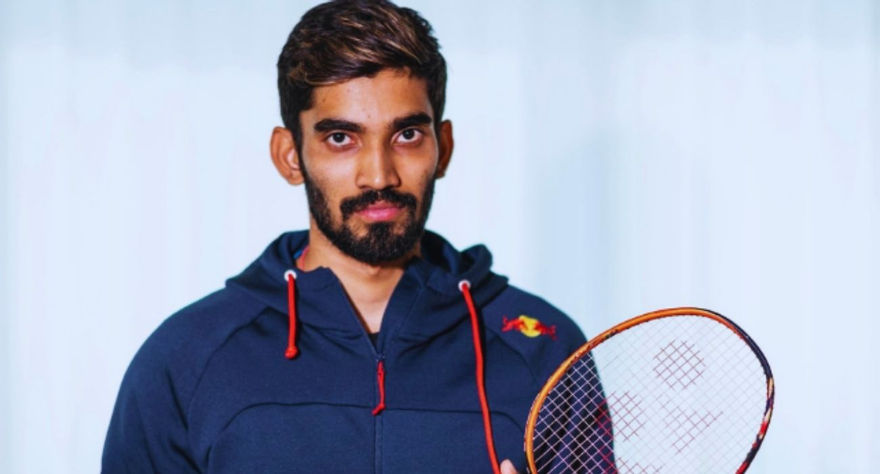
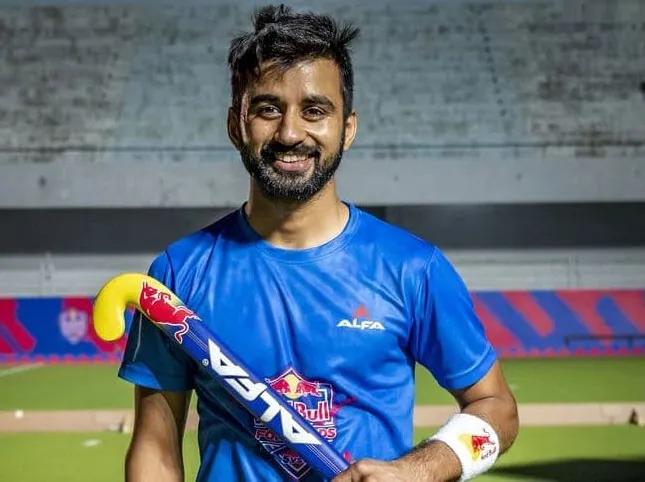
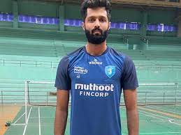

As stated in the objective letter of the Sports Authority of Gujarat, this authority will promote and
develop sports activities in line with
the sports policy of the State and the Government of India. (Currently the state government is
considering sports policy.)
The following two objectives are determined from the ongoing activities of this authority.
Students, youths, men and women as well as senior citizens are encouraged to participate in various sports by
creating a sports environment in rural, taluka, district, municipal
and municipal areas.
Excellence is promoted with the aim of imparting specific skills in the field of sports. In addition, its
quality is enhanced by providing special training, sports equipment and
infrastructural facilities.Athletes with the ability to win medals are explored in various formal as well
as informal competitions and are given a variety of intensive training.
These two objectives complement each other. The first objective is to create a conducive environment for sports
while the second objective is to focus intensive efforts
on the medal winners in the state.
Strategy design involves a variety of activities to achieve these objectives. Which also automatically
determines its operational objectives.However S.A.G. In particular, it implements government schemes related
to sports.These schemes are included in the government budget. Formerly the office of the Youth Services
Commissioner was run in consultation with the State Sports Council.Some new sports have been added to SAG
since its inception.
The details of the operations carried out during the year are as under.
Creating a sports atmosphere. About 6 vacation camps are organized for school children.
In the year 2016-2017, the players of Gujarat state have won 302 medals in various national level sports.
Badminton
Name: Srikanth Kidambi
Achievement: Ranked 1 in the bwf ranking in 2018
Srikanth Kidambi is one of the stylist Indian badminton players who
trains at the Gopichand Badminton
Academy, Hyderabad.
He was ranked 1 in the bwf ranking in 2018 he is also a winner of the Padma
Shri
and the Arjuna award he became the first ever Indian to reach the World Championship final in the
men's singles discipline and won the silver medal.
He was born in Ravulapalem, Andhra Pradesh to a Telugu family.
His father, KVS Krishna is a
landlord, and his mother Radha a house-wife and his older brother K. Nandagopal is also a badminton
player and junior national champion with his brother.
|

|
Hockey
Name: Manpreet Singh
Achievement: Represented India for the first time in a major tournament in the 2012 London Olympics
Manpreet Singh is one of the top-ranked players in the game.
He is
a part of the popular Indian national hockey team. He plays the game as a Midfielder.
Manpreet is currently a part of the club Punjab Armed Police where he is from team India in the
game.
|

|
Volleyball
Name: Karthik Madhu
Achievement: Karthik has tasted success as captain before, leading Karnataka to the gold in the 2018-19 senior nationals after almost 45 years.
Karthik Madhu has been a part of the Indian Volleyball team and
captained the team during the Asian Men's Volleyball Championship.
He has been named as the
“Heartbeat of Spikers” for the upcoming RuPay Prime Volleyball League where he will be captaining
the Kochi Blue Spikers.
|

|